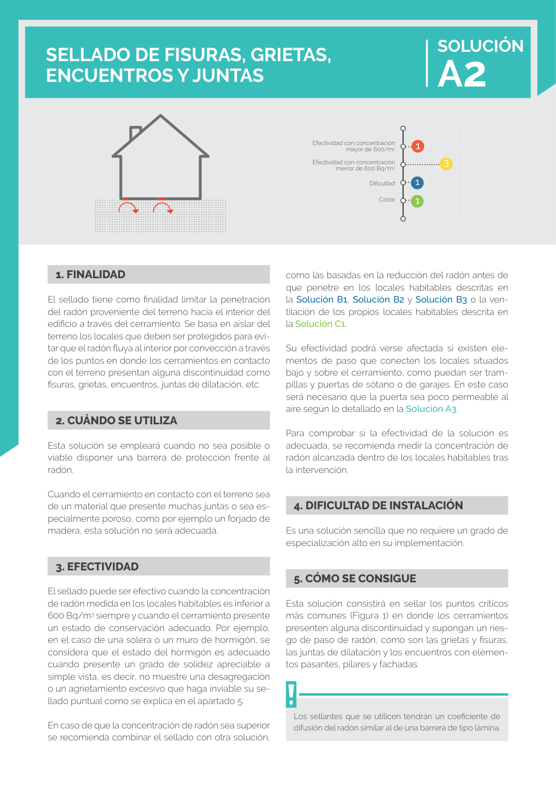

GUIA · 1. FINALIDAD · versión sin-fecha · capa guia
Formatos: JSON compacto · Markdown · PDF fuente
Ámbito del documento · texto del ámbito · documento y tablas
Tipo: figuras · nivel 1 · sección estimada: 1. FINALIDAD · padre:
1. FINALIDAD El sellado tiene como finalidad limitar la penetración del radón proveniente del terreno hacia el interior del edificio a través del cerramiento. Se basa en aislar del terreno los locales que deben ser protegidos para evi tar que el radón fluya al interior por convección a través de los puntos en donde los cerramientos en contacto con el terreno presentan alguna discontinuidad como fisuras, grietas, encuentros, juntas de dilatación, etc.

PDF fuente redistribuible: copia fiel enlazada en esta página (SHA256 verificado).